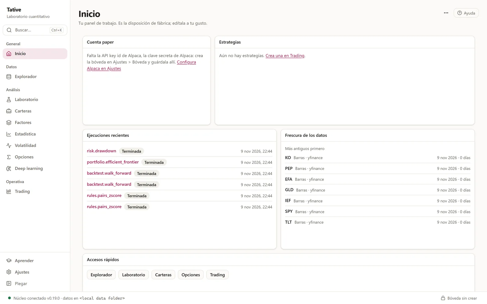
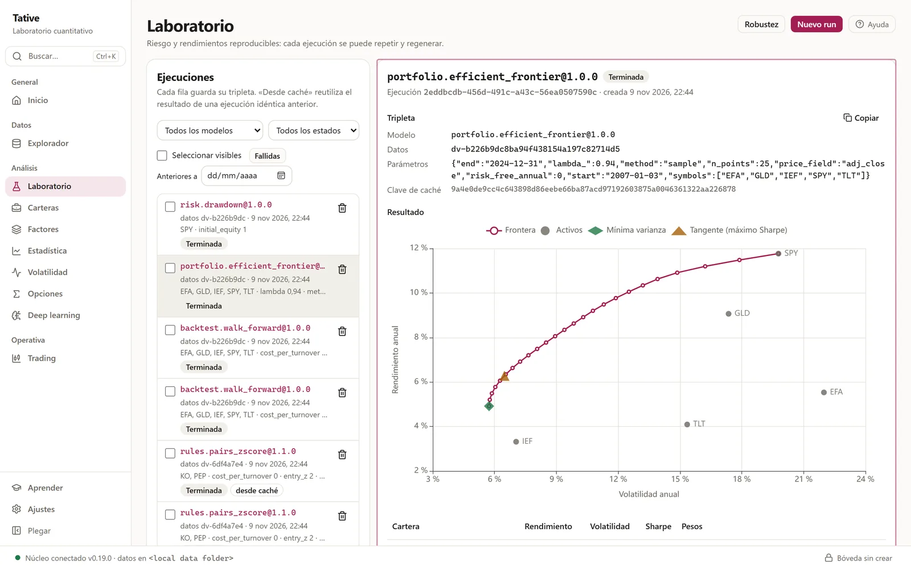
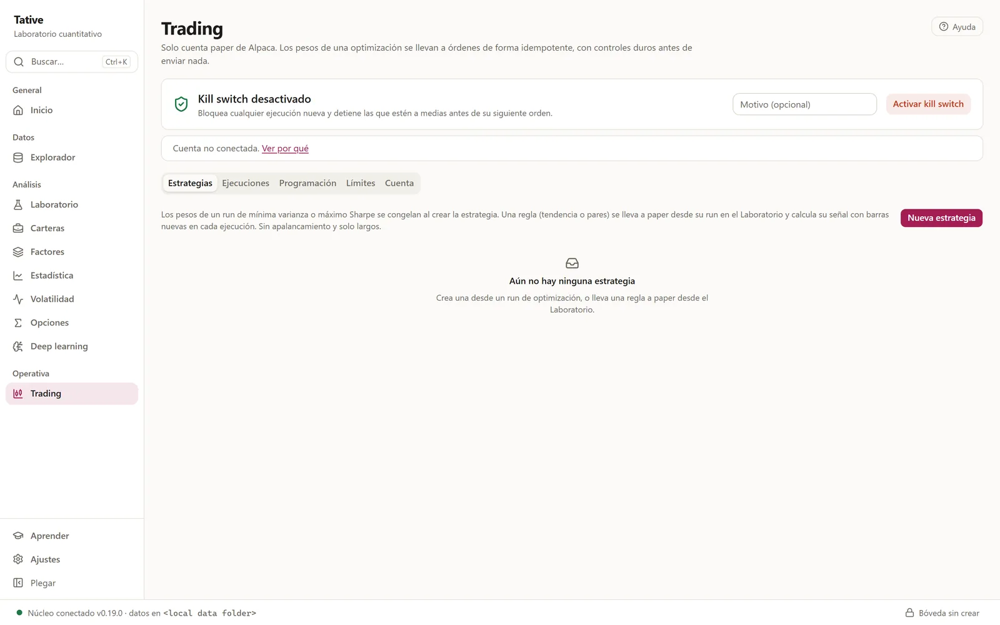

Tative
A desktop lab that takes a trading idea from point-in-time market data to a reproducible backtest, a portfolio optimisation and, if it survives, paper orders on Alpaca.

Context
Research notebooks change under your feet: data gets revised, code gets edited, parameters get forgotten. In Tative the unit of work is the experiment.
Every run is stored as an exact triple of model version, data version and parameters, so any result can be regenerated, compared against a naive baseline and, only then, pushed to paper trading through hard risk controls.
How it works
- Yahoo · FRED · ECB · Alpaca
- Validation
- Point-in-time data lake
- Versioned models
- Backtest · optimiser
- Risk guards
- Paper orders
- Paper vs backtest tracking
The numeric core is a library of pure, versioned functions with no I/O: 72 factor models (including 33 of the 101 Formulaic Alphas and 34 of GTJA-191), rule strategies, a walk-forward backtester, a long-only optimiser, volatility and options models. An architecture test stops layers from importing each other the wrong way.
Engineering decisions
No look-ahead
Every signal at day t uses a window ending at t, and rules execute one session later, as in paper trading. Whole-sample diagnostics are labelled in-sample and never feed decisions.
Costs are explicit
A proportional cost is charged on turnover, and headline numbers are always shown next to a cost-sensitivity row. Slippage is measured in paper trading, not simulated.
Against overfitting
Temporal splits only, walk-forward re-estimation, and parameter sweeps that select in-sample and then test on a held-out tail, with a check for plateaus versus isolated peaks.
Data is never silently fixed
Bars that fail validation are rejected with a reason and kept in the raw layer. Calendar gaps are reported, never imputed, and survivorship is guarded.
Results
| Series | CAGR | Volatility | Sharpe | Max drawdown | Trades |
|---|---|---|---|---|---|
| Pairs rule, no cost | 10.2% | 17.3% | 0.65 | 35.7% | 255 |
| Pairs rule, 5 bp cost | 9.5% | 17.3% | 0.61 | 35.8% | 255 |
| Buy and hold 50/50 | 8.7% | 16.7% | 0.58 | 40.4% | 1 |
Read with care. The rule is long-only and almost fully invested, so it tilts a 50/50 book rather than running a market-neutral pair. Most of the edge comes from the first decade, the pair is not significantly cointegrated in-sample (p = 0.32) and its half-life is about 246 sessions.
| Series | CAGR | Volatility | Sharpe | Max drawdown |
|---|---|---|---|---|
| Walk-forward min variance | 4.5% | 5.7% | 0.79 | 20.0% |
| Equal weight | 6.2% | 9.1% | 0.71 | 22.7% |
Lower risk for lower return. The Sharpe advantage sits in the first half of the sample; in the second half equal weight wins.
Screens



Status
Version 0.19.0, 33 development phases closed. Data, models, backtesting, optimiser, scheduled paper trading and tracking are built. Next: a declarative rule builder, long/short pairs in paper trading and option trading in paper. Nothing here is investment advice.